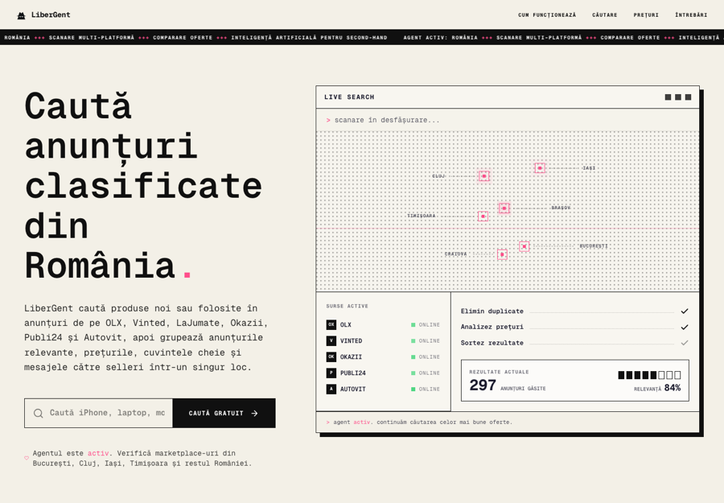
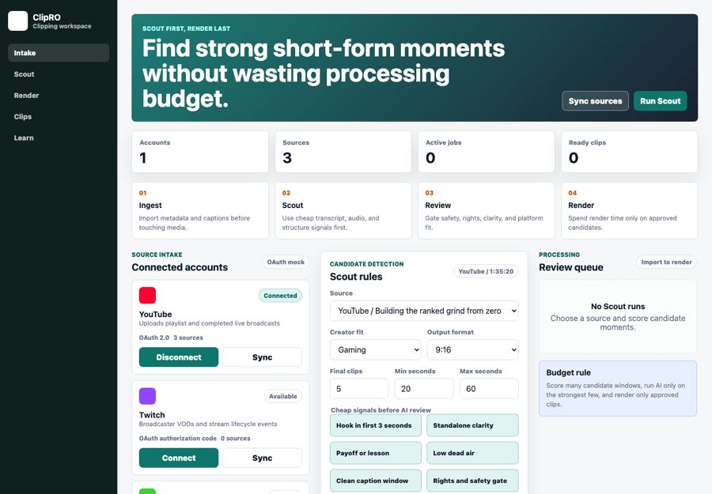
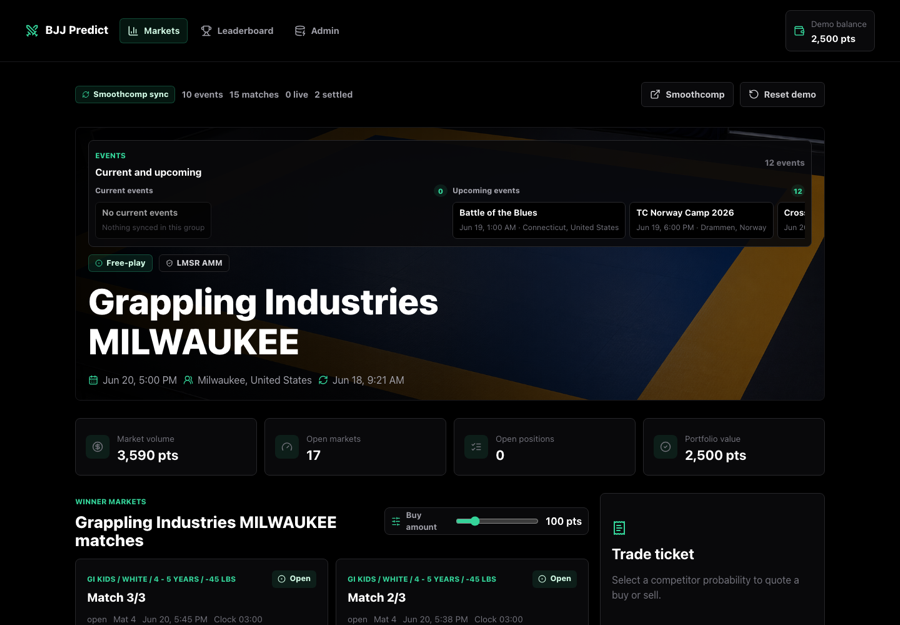
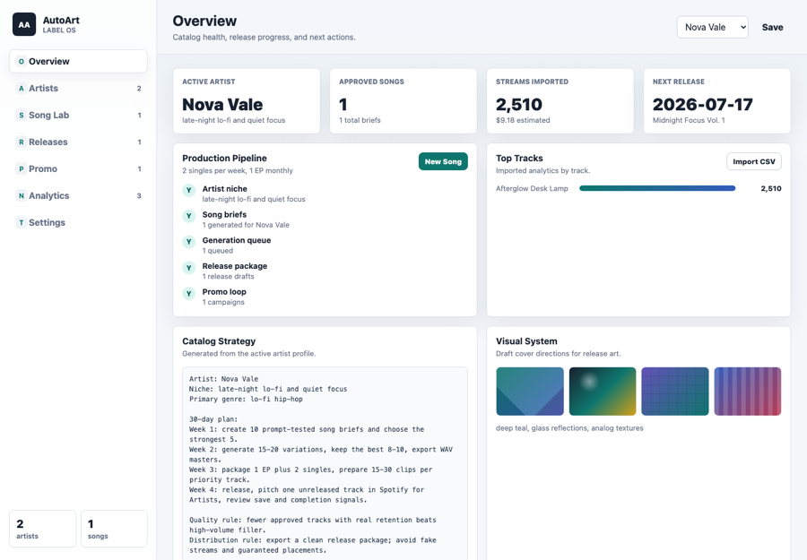

Started young
Selling cupcakes and learning early that products, margins, and distribution are a real game.
Profile
Building zero-human-company systems, local-first AI applications, GPU-backed model deployment, Kubernetes infrastructure, crypto tooling, creative automation, and distribution systems that reduce coordination. I have been coding since I was 10 years old, and have strong fundamentals on computer science, software design architecture, and codebase system design. I also work with second-brain knowledge bases, lead generation automation, content operations, smart contract architecture, internet-native distribution, privacy-preserving local AI, crypto tooling, creative agents, automated media generation, and low technical debt software systems.
Journey
Selling cupcakes and learning early that products, margins, and distribution are a real game.
Built my first dropshipping website and started learning internet commerce from the inside.
Got my first Bitcoin from trading CS:GO skins and went deeper into internet-native markets.
Launched Baguri, a Romanian marketplace for independent designers, and Spritzbox, a DIY home cocktail delivery kit.
Went all in on crypto and built several projects, with Arkadia Park still running today, while building across blockchains such as Terra Luna, Polygon, and Solana.
Launched $GONE, the biggest community coin on Polygon, reaching $10M market cap and over 20k holders.
Right now I focus on AI x crypto tooling, agentic commerce, zero-human-company systems, local AI infrastructure, automated content generation, smart contract architecture, payment-enabled agents, and second brains.
Tokens, marketplaces, prediction markets, payments, ownership, reputation, and on-chain coordination.
Chapter 2Local models, GPU infrastructure, agents, knowledge bases, automated content generation, and company operating systems.
Chapter 3Where AI and crypto meet: selling to AI agents, agent-ready products, ACP, AP2, x402, and new internet-native checkout rails.
Chapter 4Agentic attacks, hacking, OSINT, threat modeling, wallet hygiene, and defensive workflows.
Chapter 5Video, generative art, repurposing, owned audiences, social content pipelines, and creative automation connected to AI systems.
Active Projects
Active builds across crypto worlds, automated distribution, marketplace search, creator tooling, prediction games, AI music operations, and Romanian commerce.
Website-to-brand-profile system for distribution workflows, starting with Firecrawl extraction, Supabase storage, and social content generation.

Romanian marketplace search tool with structured extraction, direct HTML parsing, fallback providers, local scoring, and cost-aware provider strategy.

Creator-platform MVP that turns long-form YouTube videos and YouTube, Twitch, or Kick streams into ranked short clips.

BJJ-first free-play prediction-market MVP using Smoothcomp-style event data, winner shares, LMSR pricing, and leaderboards.

Static MVP for managing AI artist catalogs, song briefs, release packages, promo plans, analytics imports, and local persistence.
Fashion commerce codebase covering product submission, designer/influencer flows, checkout, Stripe automation, and operational UI.
Long-running crypto theme park and community world built around games, culture, ownership, quests, and real participation.
Playable Route
Vic's Quest turns the same career material into an explorable 3D world map with routes through AI systems, crypto rails, creative automation, security, and game-world thinking.
Open Game01 / AI Systems
I build AI systems around real business workflows: mapping process boundaries, designing the context agents need, connecting company knowledge, running local and cloud models, and adding human review where judgment matters. The focus is practical: less coordination drag, faster operations, reliable outputs, and privacy-aware model infrastructure.
Map workflows, decide what stays human, design context, and define reliable automation boundaries.
Build Obsidian second brains, retrieval workflows, business context, and internal knowledge bases.
Score leads, enrich data, route demand, draft outreach, and prepare operators before handoff.
Turn one source asset into posts, newsletters, short-form clips, and scheduled distribution.
Run privacy-aware local-first AI systems for sensitive professional workflows and client context.
Provision GPU VPS machines, package runtimes, mount GPUs into containers, and run Kubernetes pods.
Operate LLMs, image models, ComfyUI workflows, private inference endpoints, APIs, and auth layers.
MCP servers, subagents, background agents, parallel agents, headless agent teams, routines, and agents managing agents.
Eval-driven loops, agents fixing their own tests, CI/CD run by agents, dynamic workflows, and multi-repo orchestration.
Create review loops, confidence checks, monitoring, escalation paths, and output-quality gates.
Track uptime, GPU usage, costs, logs, queues, failed jobs, and service health.
Use Linux, OSINT, network basics, wallet hygiene, threat modeling, and sandboxing awareness.
02 / Crypto
I build on-chain products across token standards, marketplaces, gaming loops, prediction markets, community coins, NFT and token projects, on-chain reputation, agent-readable payments, x402, ACP, AP2, Solana tooling, Polygon communities, market design, and community-owned internet economies.
Fungible tokens, community coins, incentives, liquidity mechanics, and launch flows.
NFT collections, minting systems, ownership experiences, and metadata-aware products.
Multi-token systems for games, access passes, collectibles, and flexible economies.
Agent identity, trust, reputation, and standards for AI x crypto coordination.
Smart contract architecture, x402-style payment flows, ACP checkout patterns, AP2 agent payments, on-chain reputation, micropayments, and AI x crypto tooling.
x402, OpenAI and Stripe ACP, Google and Coinbase AP2, machine-readable services, API monetization, and internet-native commerce rails.
Market mechanics, event-driven products, odds, settlement thinking, and user incentives.
On-chain game loops, rewards, items, wallets, communities, and gamified distribution.
Crypto-native since 2017, from CS:GO skins for BTC to token launches, NFTs, and market-cycle building.
$200K+ community fundraising, $50K Polygon grant, and a $10M all-time-high Polygon culture coin.
03 / Automated Content Creation
I can automate video and content creation for Instagram, TikTok, YouTube, and other distribution platforms, turning ideas and raw assets into repeatable publishing systems. I have experience running multiple workflows and creative pipelines, automated video editing, and content creation with the latest image models. I also do growth hacking around the content loops that work.
Automated Reels, carousel ideas, captions, visual variations, and content packaging.
Short-form workflows, hooks, edits, subtitles, music-driven content, and trend-ready formats.
Shorts, long-form repurposing, thumbnails, descriptions, scripts, chapters, and assets.
Turn one idea, clip, stream, post, or product update into platform-native content.
Generative art, automated video music generation, vocal separation, TikTok production, presentations, and ComfyUI workflows.
Build calendars, queues, community loops, analytics feedback, and repeatable experiments.
Turn long-form assets into platform-ready posts, email, social content, and repeatable publishing systems.
Creator loops, memes, referrals, community quests, and content experiments that compound distribution.
04 / Gaming And Worlds
I think about games as worlds: mechanics, 3D models, economies, progression, lore, communities, and distribution loops all working together.
Design loops, progression, rewards, constraints, and feedback systems that keep play meaningful.
Work with 3D assets, scenes, visual identity, interaction states, and real-time presentation.
Balance items, currencies, scarcity, rewards, marketplaces, sinks, and player incentives.
Create lore, factions, rules, maps, social rituals, and reasons for players to return.
Connect ownership, wallets, collectibles, token-gated access, and on-chain game loops.
Use quests, communities, memes, leaderboards, and social mechanics to grow the world.
Long-running community world and crypto theme park direction.
Vic's Quest turns the CV into an explorable route through systems, crypto, and worlds.
Best fit for roles that turn messy business workflows into working AI systems, internal tools, automation, growth infrastructure, and practical venture-tech learning.
all-time-high market cap for a Polygon culture coin.
raised from community supporters across projects.
Polygon grant received for ecosystem work.
Hosted many workshops and Twitter Spaces for crypto and startup communities.
AI matters economically when it reduces coordination across teams, tools, and decisions.
I teach from operator experience: building ventures, launching communities, working with AI automation, mapping tech stacks, and translating technical choices into growth, positioning, and long-term strategy. I have hosted many workshops and Twitter Spaces, which gives me practical experience explaining complex technology topics to founder audiences.
I can teach entrepreneurs about community growth, platform thinking, funnels, APIs, CRM-style automation, analytics, and AI operations to connect technology choices to venture growth.
Facilitate emerging-tech analysis across AI, crypto, agentic commerce, x402, platform shifts, local AI, and infrastructure using trend radars, weak signals, scenario planning, responsible innovation, and systems thinking.
Mentor students through venture tech audits, MVP and automation sprints, masterclass integration, reflective portfolios, and 6-12 month tech-for-growth strategies.
Building local-first AI applications, GPU-backed model workflows, agentic business systems, content operations pipelines, marketplace search tools, and Kubernetes infrastructure.
Launched and grew Polygon-native community projects, including $GONE, community fundraising, grant work, memes, launch mechanics, and on-chain culture experiments.
Built through the Terra Luna cycle, NFT boom, Thirdweb tooling surfaces, token communities, Discord worlds, minting systems, wallet flows, and crypto-native growth loops.
Launched Baguri, a Romanian independent-designer marketplace, and Spritzbox, a DIY home cocktail delivery kit, while learning checkout, logistics, acquisition, and creator operations from the inside.
Entered crypto by selling CS:GO skins for Bitcoin, then kept building across market cycles, communities, NFTs, token launches, Solana tooling, Hyperliquid research, and on-chain product experiments.
Crypto product, community, and market-cycle experience during the Luna era.
Community coin launch, grant work, culture campaigns, and ecosystem distribution.
Market-structure research, on-chain trading context, and crypto product tracking.
NFT, wallet, contract, and minting tooling context across crypto builds.
Run models on GPUs through container runtimes, mount GPUs into Kubernetes pods, work with platform infrastructure, and package local AI systems for privacy-sensitive users such as law firms.
Build company operating systems as file systems: business context, internal knowledge bases, Obsidian second brains, automations, agents, cron jobs, monitoring, and human review loops where needed.
Explore smart contract architecture, payment-enabled agents, x402-style tooling, OpenAI and Stripe ACP, Google and Coinbase AP2, ERC-8004-style reputation, and content around emerging crypto primitives.
Pair product building with personal branding, community building, owned-audience strategy, impactful writing, storytelling, and marketing systems that compound.
Map existing business workflows, identify automation leverage points, design the context each agent needs, and define where no-code systems are enough versus where custom engineering is required.
Create review steps, quality checks, confidence thresholds, and escalation paths so AI systems produce usable work instead of just impressive demos.
Separate repeatable work from judgment-heavy work, keeping sensitive decisions, relationship moments, taste calls, and leadership responsibilities with people.
Design agents that enrich new CRM leads, score and route inbound demand, research prospects, and draft first-touch emails before a human operator enters the workflow.
Build content pipelines that turn one YouTube link or long-form asset into ten platform-ready posts, newsletters, short-form videos, and scheduled social content.
Create knowledge bases that get smarter over time by connecting operational context, customer signals, documentation, and retrieval workflows so companies move as fast as their information flows.
Scope customer support agents for common questions, meeting prep agents that research attendees, and practical automations that reduce coordination costs inside the business.
Machine-readable capabilities, protocol-level pricing, automatable onboarding, provable reliability, and API economics that make services faster, cheaper, or more reliable than an agent computing the output itself.
The internet is splitting in two: one surface for humans and one surface for agents. I am interested in how to sell to AI agents, how agent-readable products get discovered, priced, purchased, and trusted, and how popular human tools can be reimagined for agents. Examples include Agentmail as mail for agents, content automation APIs, agent-ready marketplaces, and commerce protocols that let agents transact without fragile browser work.
MacBook accelerometer experiment for Apple Silicon using IOKit HID.
GitHubmacOS video editor built around AI workflows.
Self-hosted AI workspace for running an open local AI environment.
Free, open-source, self-hostable internet computer environment.
Game Boy MIDI synthesis engine for searching songs and generating 8-bit versions.
GPU-rendered terminal emulator with inline 3D graphics.
Open-source AI video platform for clips, shorts, and self-hosted creator workflows.
Open-source content automation project for video generation and distribution experiments.
GitHubOpen-source image and video generation studio with many model integrations.
Claude Code skill for AI search optimization, citability, crawler analysis, and reports.
Open-source app for managing agents at work.
Agent framework from NousResearch focused on personal growth and long-running use.
Hosted messaging store and router for agent communication and retrieval.
Agentic social media scheduling tool for publishing workflows.
Open-source content scheduler powered by the Zernio API.
Open-source ManyChat alternative for visual chatbot and social automation flows.
Autonomous AI agent loop that runs until product requirements are complete.
Real-time face swap and one-click video generation from a single image.
Batch video captioning with a vision-language model.
GitHubComfyUI nodes for multilingual AI music generation with lyrics.
GitHubOpen-source music generation model repository.
GitHubExperimental vibe-building project.
GitHubGenerator for ad assets and creative production experiments.
Free motion capture tooling for accessible capture workflows.
Autonomous white-box AI pentester for web applications and APIs.
Interactive icon system built around motion and intent.
Research tool for fabricating GitHub personas with generated repositories.
GitHubLocal transcription app for owning the transcription workflow.
Accessible retro-inspired UI components for modern web and app interfaces.
3D avatar project for web interfaces and experiments.
GitHubMCP integration for Unreal Engine agent workflows.
Curated prompt examples and resources for Nano Banana pro image workflows.
Infinite-length video generation research with error recycling.
Open-source agentic operating system.
Security research tool for social-engineering awareness and device-signal testing.
API for search, scraping, and interacting with the web at scale.
GUI for vocal separation using deep neural networks.
GitHubReal-time webcam demo with SmolVLM and a llama.cpp server.
TikTok account warmup automation experiment.
GitHubPortable ComfyUI installer for Windows, macOS, and Linux.
GitHubOpen-source vibe-coding platform built on the Cloudflare stack.
HTTP-native payments protocol for the internet.
Starter kit for prediction-market products, market creation, trading flows, and crypto-native experiments.
GitHubStudio and tooling for training and running open models locally.
Encrypted push-to-talk voice communication over Tor hidden services.
GitLab